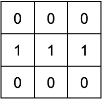
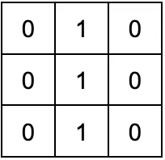
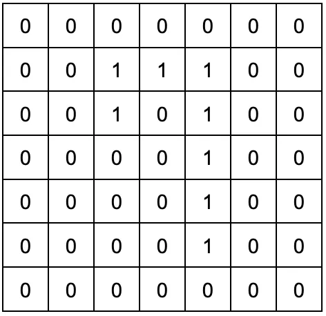
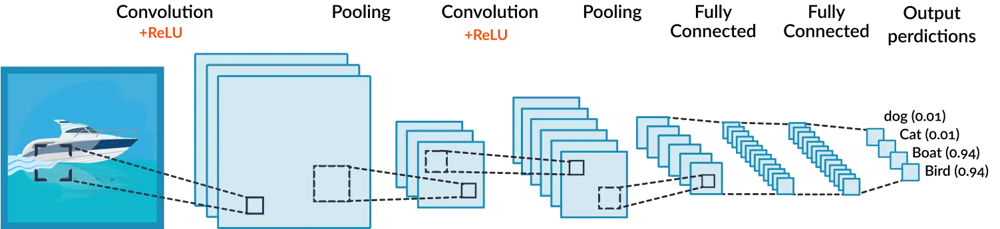

커널 / 필터
일반적으로 3×3 또는 5×5 크기로 적용하며 특정 모양을 찾는 사냥꾼입니다.
Part 2 · CNN
작은 필터로 이미지를 훑어 패턴을 찾고, 중요한 정보만 남겨 압축합니다.
Convolution · S65
합성곱층은 이미지를 통째로 보지 않고 작은 커널/필터를 이동시키며 각 위치에 패턴이 얼마나 있는지 계산합니다.
일반적으로 3×3 또는 5×5 크기로 적용하며 특정 모양을 찾는 사냥꾼입니다.
필터를 적용하는 위치의 간격, 즉 한 번에 이동하는 보폭입니다.
입력 가장자리에 값을 덧붙여 합성곱할 때마다 이미지가 작아지는 것을 막습니다.
Original Diagram · S66–67
입력의 3×3 영역과 필터의 같은 위치 값을 곱해 모두 더하고, 그 합을 특성맵 한 칸에 기록합니다.




Interactive · Widget 04
필터와 보폭, 패딩을 바꾼 뒤 계산식과 특성맵이 채워지는 과정을 확인하세요.
Pooling · S68
Max Pooling은 대상 영역의 최댓값을, Average Pooling은 평균을 반환합니다. 평균은 중요한 가중치를 가진 값의 특성을 희미하게 할 수 있어 대부분의 CNN에서는 Max Pooling을 더 자주 사용합니다.
| 방식 | 1행 | 2행 | 3행 | 4행 |
|---|---|---|---|---|
| Max | 2 · 3 · 3 · 2 | 1 · 2 · 2 · 1 | 0 · 1 · 1 · 1 | 0 · 1 · 1 · 1 |
| Average | 1.25 · 2 · 2 · 1.25 | 0.5 · 1 · 1.25 · 1 | 0 · 0.5 · 1 · 1 | 0 · 0.5 · 1 · 1 |
Interactive · Widget 05
본문의 S68 원본 표는 5×5 입력을 스트라이드 1로 계산한 자료입니다. 이 위젯은 풀링의 절반 축소를 분명히 보여 주기 위해 6×6 입력에 2×2 풀링과 스트라이드 2를 적용합니다.
CNN Roles · S69

Quick Check